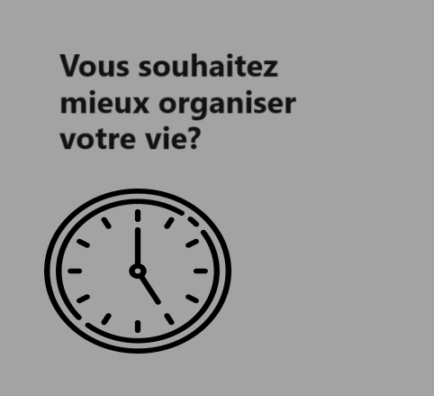
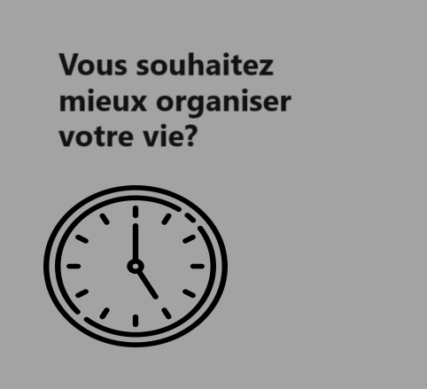
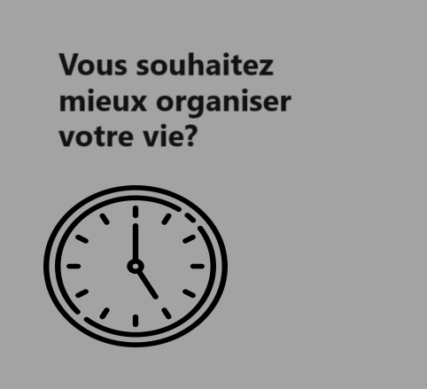

A propos
Contact

Task Master
Pour une vie plus organisée
Task master est un site vous permettant de créer des to do list
afin de mieux vous organiser, vous pouvez desormais classifier
vos listes ainsi que gerer leur prioritées.
 
